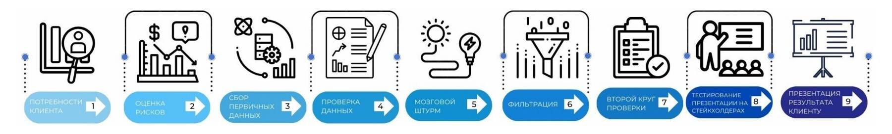
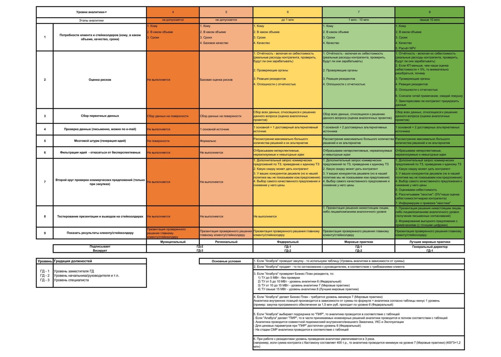
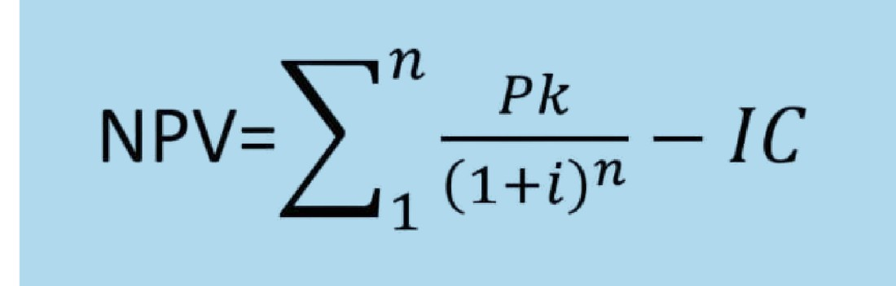
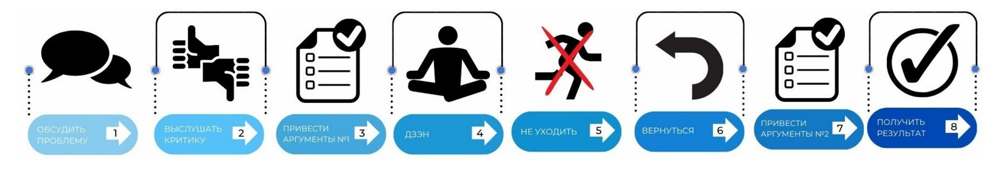
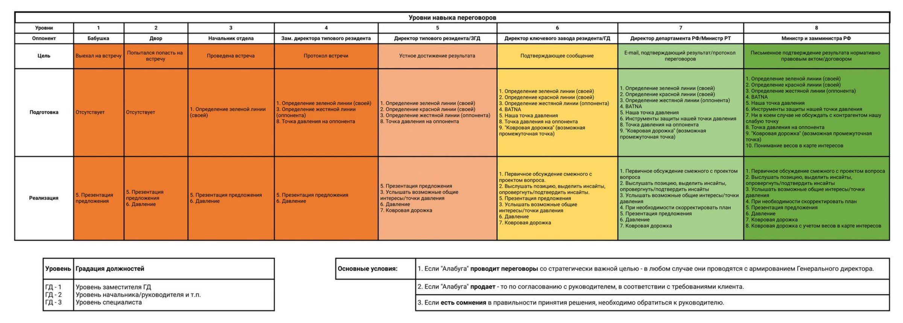
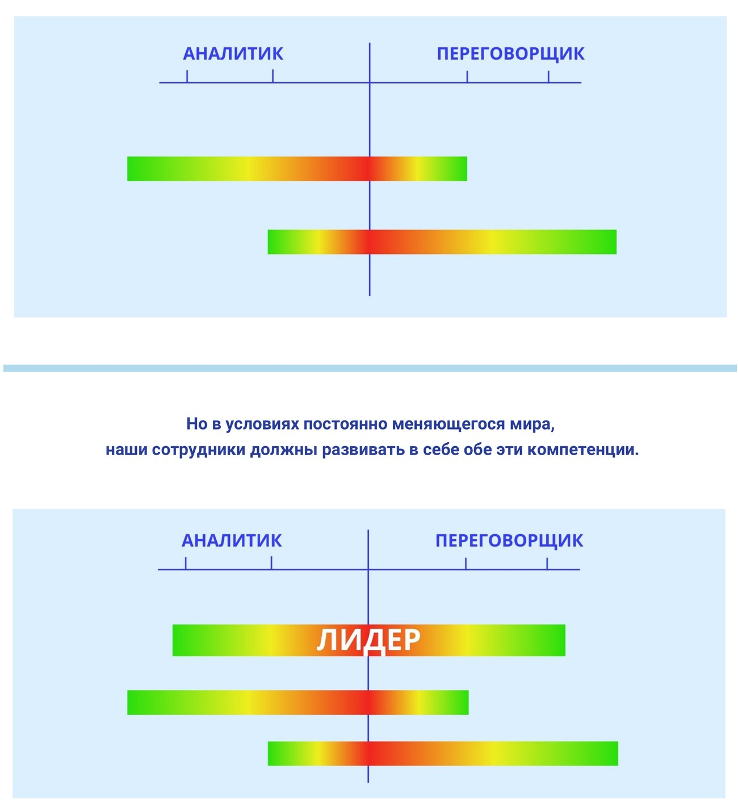

Я – Ал, твой проводник в «Алабуге»
Моя задача – довести тебя от первого дня до уверенной устной сдачи материала старшему сотруднику. Начинаем с регламента работы внутри Управления HR.
Регламент
Восемь разделов регламента: постановка и отчётность по задачам, штрафы, график работы и внешний вид.
Культура
Миссия, 4 ценности, стратегия, 21 компетенция, лидерство, делегирование и 21 ступень грейдов.
Симуляции
Правила Business Cats, Грузовиков и Civilization IV: общая база и термины каждой игры.
Тренажёр
Материал придётся сдавать устно. Отвечай вслух на вопросы карточек – так же, как будешь отвечать старшему сотруднику.
Три шага до уверенной сдачи
Я не пересказываю документ вместо тебя – я показываю точный текст регламента и рядом объясняю, что он значит на практике. Сначала читаешь пункт, потом мою расшифровку, потом проговариваешь вслух в тренажёре.
Проверь себя простым правилом: если ты можешь объяснить пункт своими словами и назвать конкретные цифры и сроки – ты его знаешь.
1Прочитай
Открой раздел «Регламент». Каждый пункт дан дословно – как в приказе №97 от 01.02.2025.
2Пойми
Под каждым разделом – мой разбор: что это значит в реальной работе и на чём чаще всего ошибаются.
3Проговори
Тренажёр задаёт вопросы так, как их задаст старший сотрудник. Отвечай вслух, потом сверяйся.
Документы для скачивания
Исходные файлы в том виде, в котором они утверждены. Если текст в приложении расходится с файлом, верным считается файл.
Частые вопросы
Короткие ответы на то, что чаще всего спрашивают в первые недели.
Если ответа на твой вопрос здесь нет, нажми на меня в правом нижнем углу и напиши. Вопрос передадут ответственному сотруднику, и тебе ответят лично.
Регламент о правилах работы внутри Управления HR
АО «Особая экономическая зона промышленно-производственного типа «Алабуга». Введён приказом №97 от 01.02.2025.
Это первый документ, который тебе предстоит сдать. Открывай раздел, читай текст – он приведён дословно. Когда прочитаешь, переходи в тренажёр и проговаривай ответы вслух.
Настоящий регламент является внутренним организационно-нормативным документом, определяющим правила работы внутри Управления HR Акционерного общества «Особая экономическая зона промышленно-производственного типа «Алабуга».
В настоящем регламенте используются следующие термины и сокращения:
Постановщик – сотрудник, который ставит задачу и принимает результат работы по ней;
Исполнитель – сотрудник, ответственный за выполнение задачи и своевременное предоставление результатов работы постановщику;
ЗГД – заместитель генерального директора.
РГП – руководитель группы проектов.
РП – руководитель проекта.
ГС – главный специалист.
ВС – ведущий специалист.
МС – младший специалист.
SMART – способ постановки и достижения целей, включающий в себя: конкретность, измеримость, достижимость, важность и определённость по срокам;
Канбан – система постановки задач и организации рабочих процессов для эффективного достижения поставленных целей. Метод основан на управлении выполнением задач с помощью карточек, сигнализирующих о наступлении и завершении определенных этапов.
Все задачи в рамках работы Управления HR исходят от Заместителя генерального директора (далее делегируются на нижестоящих сотрудников).
Задача может быть поставлена нескольким исполнителям одного уровня.
Например, ЗГД поставил задачу одному из РП о предоставлении отчета заполняемости всех кластеров группы компаний. Для корректного свода всех данных, ответственный РП ставит данную задачу своим коллегам того же уровня.Таблица 1 «Постановка оперативных задач»:
| Постановщик | Исполнитель |
|---|---|
| ЗГД | Возможна постановка задач на любом уровне сотрудника |
| РГП | РГП и РП (в случае кросс-задач), МРП, ЗРП, специалист, МС, старший специалист |
| РП (все уровни) | РП (в случае кросс-задач), МРП, ЗРП, специалист, МС, старший специалист |
| ГС | ГС (в случае кросс-задач), ВС, специалист, МС, старший специалист |
| Специалист | МС |
Все поставленные задачи должны соответствовать системе SMART.
Задача в обязательном порядке ставится в канбане Битрикса с обозначением исполнителя в случаях, если:
Задача озвучена постановщиком в устном формате.
Задача прописана в мессенджере или на почте.
Отчетность по результатам работы имеет четкую формулировку и всегда сопровождается прикреплением подтверждения в виде скриншота, скана документа и т.д. Отчет направляется постановщику в мессенджер или на почту (лично, через референта, РОРа).
В случае переноса задачи формулировка звучит следующим образом:
«Прошу перенести срок задачи на завтра 25.02.2025 в связи с тем, что Центр занятости города Елабуга изменил образец заполнения заявки об участии в региональной программе, ввиду чего требуется дополнительное время на заполнение заявки».В случае закрытия задачи формулировка звучит следующим образом:
«Прошу закрыть задачу – в outlook была направлена рассылка на всех РП HR об участии в очном финале 5 сезона «Лидеров России». Письмо направлено 22.11.24».В случае, если исполнитель пишет отчет по задаче в ЭДО РТ, необходимо в обязательном порядке прикрепить скриншот с резолюциями.
В случае, если задача была поставлена в 1С, отчет о результатах работы необходимо референту/РОРу постановщика в день срока до 10:00 по Москве.
В случае, если задача была поставлена в ЭДО РТ, отчет с результатами работы необходимо предоставить референту/РОРу постановщика в день срока до 17:30 по Москве.
Если исполнитель направил отчет после указанного срока, не гарантировано, что постановщик ответит на запрос исполнителю.В случае, если постановщик закрыл задачу в устной форме (лично), запрос на закрытие задачи дублируется в мессенджер/на почту для подтверждения.
В случае, если отчет был направлен в иной форме, задача будет являться просроченной.
Например, если отчет будет прикреплен в комментариях канбана.В случае, если задача просрочена на исполнителя накладывается штраф согласно Таблице 3:
| Количество дней просрочки | Размер снижения ДИ, % (накопительно) |
|---|---|
| 1 | 1 |
| 2 | 1,5 |
| 3 | 2 |
| 4 | 2,5 |
| 5 | 3 |
| 6 | 3,5 |
| 7 и более | 10 |
*Сумма штрафов за несколько дней суммируется (например, при просрочке задачи на 4 дня, сумма штрафа равна 7% ДИ).
В случае, если исполнитель самостоятельно (без согласования постановщика) перенес себе срок по задаче – накладывается штраф 30% ДИ.
В случае, если в документах/отчетах/таблицах, представленных ЗГД HR, будут найдены грамматические, орфографические или пунктуационные ошибки на ответственного РГП/РП/ГС накладывается штраф в размере 1% ДИ за каждую ошибку, исполнителю (в подчинении у данного РГП/РП) штраф накладывается по усмотрению РГП/РП, т.е. от 1 до 100% ДИ.
При статусе – «Задача просрочена» с исполнителя не снимается необходимость ее выполнения.Рабочий день сотрудника Управления HR начинается в 8:00 по Москве, согласно подписанному сотрудником трудовому договору. В случае, если данное правило нарушается, на сотрудника накладывается штраф. Размер штрафа определяет РОР/Референт ЗГД/ЗГД.
Внешний вид сотрудника Управления HR должен соответствовать дресс-коду – smart casual, согласно Приказу №1645 от 04.12.2024г "О введении в действие Положения "О соблюдении корпоративного этикета и дресс-кода для сотрудников АО "ОЭЗ ППТ "Алабуга". В случае, если данное правило нарушается, на сотрудника накладывается штраф. Размер штрафа определяет ЗГД/РГП/РП/РОР.
Корпоративная культура компании
Миссия, ценности, стратегия, 21 лидерская компетенция, лидерство, делегирование и грейды.
Регламент отвечал на вопрос «как мы работаем». Корпоративная культура отвечает на вопрос «почему мы работаем именно так».
Алабуга – это масштабный федеральный проект, направленный на развитие регионов путём прямых российских и иностранных инвестиций в высокотехнологичные отрасли экономики, импортозамещающие производства.
ОЭЗ – это часть территории Российской Федерации, которая определяется Правительством Российской Федерации и на которой действует особый режим осуществления предпринимательской деятельности, а также может применяться таможенная процедура свободной таможенной зоны.
АО «ОЭЗ ППТ «Алабуга» – это управляющая компания, являющаяся инфраструктурным партнером полного цикла и обеспечивающая кадровую, социальную, промышленную и строительную инфраструктуры.
Корпоративная культура – это нормы и образцы поведения, которые определяют деятельность всех сотрудников компании и отношения между ними.
Корпоративная культура Алабуги нацелена на развитие лидерских качеств и навыков сотрудников.
«Мы растим промышленность для благополучия людей, создавая лучшую в мире инфраструктуру».
Нам предстоит не просто привлекать новых инвесторов в заводы, как мы делали это на протяжении 10 первых лет существования «Алабуги». Сегодня стоит задача растить и развивать новые российские производства – у нас есть для этого и знания, и собственные ресурсы, и хорошие отношения с федеральными институтами развития.
Сами по себе заводы – это не самоцель. Но заводы – это налоги для государства и это заработная плата для людей. Поэтому в конечном итоге, мы все делаем для благополучия людей.
Лучшая в мире инфраструктура – это не только автомобильные и железные дороги, электричество и водопровод. Сейчас мы должны создать лучшую в мире инфраструктуру поддержки роста новых производств. Это предполагает и финансовую, и HR-инфраструктуру.
Каждый лидер, вне зависимости от должности, которую он занимает, берет на себя ответственность. Он не делегирует наверх проблемы – он предлагает решения. Если он видит неэффективность, то старается устранить ее, если видит проблему, то решает её.
И в целом это наша страна. Невозможно быть островком инфраструктуры мирового уровня в море недоремонта. Поэтому если мы видим в нашей стране неэффективность, и никто эту неэффективность не устраняет, то это будем делать мы.
Для настоящих достижений, для настоящего развития необходимо выходить из зоны комфорта. Не получится сидеть и радоваться существующим компетенциям, существующим знаниям, не анализировать сложные вещи, не звонить неприятным людям.
Мы думаем о реальных потребностях клиентов, об их чаяниях, о том, что мы можем для них сделать. И здесь важно понимать, что клиенты бывают как внешние, так и внутренние. Внутри компании у сотрудников тоже есть клиенты, и для их комфорта сотрудникам также следует выходить из зоны собственного комфорта.
В Советском Союзе был лозунг «Каждому по труду!» У нас в «Алабуге» не так. Мы оцениваем людей по результату. Если наш сотрудник не достиг результата, не вышел из зоны комфорта, чтобы достичь его, то он не может рассчитывать на поощрение. Наоборот – его будут порицать за бездействие, за лень!
Vision компании предполагает создание не менее 50 собственных производств.
На данный момент импорт в Россию составляет более 22 трлн. рублей, поэтому стратегически важная задача для страны – создавать собственные производства.
10 площадок по всей стране предполагает, что на каждой из них работает команда лидеров – энергетиков, АСУТПшников, юристов, экономистов – людей, которые берут на себя ответственность за результат, решают проблемы и вносят улучшения, не дожидаясь команды сверху.
Создан современный производственно-образовательный центр «Алабуга Политех» по подготовке технологических предпринимателей, которые в дальнейшем смогут закрыть кадровую потребность управляющей компании и действующих резидентов Алабуги;
Запущена программа внутреннего и внешнего ассессмента и развития под названием «100 Лидеров», для выпускников высших учебных заведений с дальнейшим трудоустройством в управляющую компанию;
Создана ОЭЗ «Новгородская». Она расположилась в границах Новгородского района, недалеко от административного центра Великий Новгород.
В ОЭЗ «Алабуга» на 2025 год насчитывается 43 действующих резидентов.
Корпоративная система развития и оценки сотрудников базируется на лидерских компетенциях. Они помогают нам лучше планировать задачи, которые можно делегировать сотрудникам для достижения наилучших результатов.
В нашей компании существует 21 лидерская компетенция:
| Компетенция | Описание |
|---|---|
| Видение всей картины в целом | Видеть всю картину в целом (что на что влияет; взаимосвязи) |
| Выделять главное из списка | Расставлять приоритеты в работе, выделяя главное из списка |
| Декомпозиция | Разбивать сложные задачи на простые; планировать во времени и пространстве |
| Обучаемость | Учиться, учиться и еще раз учиться! |
| Чуйка на людей | Умение оценить человека в соответствии с видением экспертного совета |
| Вариативность мышления | Умение предлагать разные пути решения задач |
| Делегирование и контроль | Умение поставить задачу сотруднику, который с ней справится; отслеживание результата по критическим точкам |
| Сделать дело, а не найти причину | Нести личную ответственность за результат |
| Искренность | Точно и своевременно доносить неприятную информацию |
| Коммерческая чуйка | Умение понять и просчитать коммерческую выгоду проекта |
| Управление рисками и возможностями | Управление рисками и возможностями: сравнивать риск с потенциальной выгодой |
| Эмпатия | Умение учитывать интересы всех сторон |
| Неваляшность | Настойчивость в преодолении трудностей, пробивной характер |
| Ориентация на качество | Не мириться со снижением качества |
| Влиять и убеждать | Высокая коммуникативная гибкость |
| Способность заряжать энергией | Умение заряжать энергией и мотивировать на достижение результата |
| Критичность мышления | Способность мышления, при котором человек ставит под сомнение поступающую информацию, требует доказательств, принимает только факты |
| Компетенция | Описание |
|---|---|
| Вера в дело | Вера в развитие промышленности РФ |
| Стремление к большему | Стремление к достижению профессиональных высот и материальных благ |
| Выход из зоны комфорта по аналитике | Умение провести аналитику необходимого качества/уровня |
| Выход из зоны комфорта по общению | Способность результативно общаться на разных уровнях вне зоны своего влияния; добиваться намеченной цели в общении |
Главная мотивация в нашей компании
Стремление к большему увеличивает эффективность любой деятельности.
Если человек хочет повысить собственную квалификацию, он самостоятельно обучается, совершенствует свои навыки и компетенции.
Даже маленькие позитивные шаги вперед могут привести к достижению цели.
Если довольствоваться тем, чего уже добился – начнется деградация. Не будет необходимости в приобретении новых знаний и навыков, постепенно будут забываться те, которые были приобретены ранее, так как отпадет нужда в их использовании.
Чтобы к чему-то стремиться, всегда нужны цели. Поставленные цели проясняют, во что мы вкладываем свои ресурсы.
Человек хочет развиваться, совершенствоваться и добиваться новых целей, только в случае искренней веры в свое дело. Когда он точно знает, зачем он это делает и к чему это приведет.
Вера в дело – фундамент, на котором строятся остальные компетенции нашей компании.


Маржа – это разница между себестоимостью товара и ценой, по которой продают товар. В себестоимость входят все издержки на производство, закупку, упаковку и логистику товара, в том числе траты на сырьё, газ, свет и зарплату сотрудников.
Хвостик – 5% * наша оценка себестоимости + маржа контрагента (сумма в резерве).
Расчет NPV (Net Present Value) – Чистая приведённая стоимость – финансовый показатель, который демонстрирует ожидаемый будущий доход проекта за вычетом его первоначальной стоимости. Проще говоря, NPV позволяет сравнить текущие деньги с будущими деньгами, которые из-за инфляции будут стоить дешевле. Если показатель NPV больше 0, проект считается эффективным.

| Обозначение | Значение |
|---|---|
| n | период расчета |
| Pk | денежные потоки за выбранный период времени |
| i | ставка дисконтирования (процент, отражающий соотношение будущего дохода и его нынешней стоимости, ценность денежных средств) |
| IC | размер первоначальных вложений |


Зеленая линия – условие, в котором вторая половина точно уверена, то, чего оппонент или вы хотите добиться от переговоров.
Красная линия – условие, ниже которого вторая сторона не опустится, но его еще можно переубедить.
Жестяная линия – условие, ниже которого вторая сторона не опустится никогда не при каких условиях.
Точка давления оппонента – слабое место оппонента, на которое в ходе переговоров можно надавить, с целью достижения наиболее выгодного результата.
Ковровая дорожка – предложение оппоненту выгодных условий, после оказания на него давления, от которых он, с большой вероятностью, не сможет отказаться.
BATNA (best alternative to negotiated agreement) – лучший альтернативный вариант к достигнутым договоренностям (наиболее выгодная альтернатива).
От рождения люди более тяготеют либо в сторону аналитики, либо в сторону общения. Но в условиях постоянно меняющегося мира, наши сотрудники должны развивать в себе обе эти компетенции.
Система компетенций создана для координирования задач и сотрудника, который с ней справится. В зависимости от уровня компетенции сотрудника, мы можем выявить вероятность выполнения задачи – т.е. достижения результата.

Мы разработали наглядные таблицы по Уровню навыка переговоров и Уровню Аналитики. Ориентируясь на эти таблицы, каждый сотрудник может понять свой текущий уровень, а также стремиться к большему, принимая все более сложные вызовы.
| Уровень | Значение |
|---|---|
| 8 | Лучшие мировые практики |
| 7 | Мировые практики |
| 6 | Федеральный уровень |
| 5 | Региональный уровень |
| 4 | Муниципальный уровень |
| 3 | Сельмаг |
| 2 | Двор |
| 1 | Бабушка |
| Уровень | Значение |
|---|---|
| 8 | Министр / замминистра РФ |
| 7 | Руководитель федерального холдинга / директор департамента РФ / министр РТ |
| 6 | Директор ключевого завода резидента (более 3 млрд руб. выручки) / мэр / ГД / замминистра РТ / зам. директора департамента РФ |
| 5 | Директор типового резидента / ЗГД / региональный начальник управления |
| 4 | Зам. директора типового резидента / региональный начальник отдела |
| 3 | Отдел |
| 2 | Двор |
| 1 | Бабушка |
Уровни декомпозиции определяют насколько разъясненно и обоснованно ставится задача перед сотрудником, сколько вводных данных необходимо дать, насколько конкретную цель ставить. С другой стороны, мы также можем заранее подготовиться к «урону», который может принести невыполнение задачи!
Мы уверены, что каждый наш сотрудник обладает лидерским потенциалом, вне зависимости от того, хочет он развиваться как профессионал (создавая твердый фундамент для работы компании) или как лидер (готовый к новым масштабным задачам в рамках страны).
Декомпозиция – операция мышления, состоящая в разделении целого на части. Также декомпозицией называется общий приём, применяемый при решении проблем, состоящий в разделении проблемы на множество частных проблем, а также задач, не превосходящих суммарно по сложности исходную проблему, с помощью объединения решений которых, можно сформировать решение исходной проблемы в целом.
SMART (specific, measurable, achievable, relevant, time bound) – это конкретная, измеримая, достижимая, значимая, ограниченная во времени цель (КИДЗО).
Forward – уровень, при котором не нужны вводные, организованное, не требуемое дополнительных разъяснений достижение целей.
В карту целей сотрудников вносятся цели, которые соответствуют двум группам задач и связаны с двумя видами премирования.
MBO
Цели вида «MBO» – задачи МИРОВОГО уровня, выполняемые сотрудником САМОСТОЯТЕЛЬНО на основании вводных данных от руководителя. Соответствие цели «MBO» мировому уровню определяется руководителем. Данный вид целей вносится сотрудниками в систему 1С:KPI самостоятельно по согласованию с руководителем и в соответствии с системой SMART.
Этапы: 1) составление карты целей → 2) утверждение карты целей руководителем → 3) отчет о факте выполнения задач
ДИ
Цели вида «ДИ» устанавливаются сотрудниками АГД заведомо закрытыми в систему 1С:KPI. Формулировки и вес данных целей не подлежат изменению. Данный вид целей включает в себя регулярные и нерегулярные задачи, в том числе процессные и поступающие от руководителя в течение месяца. «ДИ» включают базовые задачи, но не ограничиваются исключительно должностными инструкциями сотрудника.
При поступающих в рамках «ДИ» задачах от руководителя рекомендуется фиксировать поручения в соответствующем поле «Критерий выполнения» в системе 1С:KPI. Снятие проверки выполнения данной группы задач осуществляется руководителем единоразово, без возможности повторного прожатия.
Этапы: 1) проверка наличия установленных ДИ в системе 1С:KPI → 2) фиксация поступающих задач в поле «Критерий выполнения» → 3) отчет о факте выполнения задач → 4) учесть при закрытии, что снятие проверки осуществляется единоразово
Лидер – тот, кто берет ответственность за себя и за других людей и добивается результата.
1. Лидер всегда стремится к большему. Лидер находится в постоянном движении. Достигнув одной своей цели, он ставит следующую, еще масштабнее и амбициознее. Его никогда не устраивает то, что он имеет сейчас, он стремится качественно и количественно повышать свои профессиональные и личные компетенции, выходить на новые уровни развития.
2. Главный учитель лидера – это его прошлые ошибки. Лидер не боится ошибаться. Он знает, что каждая ошибка – это урок, который позволит ему стать лучше. Он работает над своими ошибками, чтобы не повторять их в будущем. И в следующий раз, оказавшись в этой ситуации, он уже точно будет знать, как повести себя и как выжать из нее максимум.
3. Лидер чаще находится вне зоны своего комфорта, чем внутри неё. Любое развитие – это трудно. Чтобы мышцы росли, они должны болеть, чтобы освоить новый навык нужно потратить не только время, но и свои силы, а что уж говорить о публичном выступлении перед полным залом неизвестных тебе людей. Но за выход из зоны комфорта полагается самая лучшая награда – твои победы, победы над самим собой, победы, которые отличают тебя сегодняшнего от тебя вчерашнего. Любой лидер проходит через это, поэтому он точно знает главный секрет зоны комфорта: «Делая то, что тебе не нравится сегодня, ты получаешь то, что хочешь завтра».
4. Энергия – главный ресурс лидера, и он осознанно управляет ей. Лидер – это человек, который заряжает энергией других. И чтобы делиться своей энергией с другими, он сам должен быть в постоянном энергетическом тонусе. В условиях решения все возрастающих по сложности задач, общением с большим количеством людей и участием в разнообразных мероприятиях, ключевым навыком лидера становится расстановка своих энергетических приоритетов. Лидер умеет грамотно расходовать свою энергию, держать ее баланс и вовремя наполнять резервуары своих сил новыми запасами.
5. Лидер – владелец процесса, а не наемный рабочий. Мышление лидера отличается от мышления большинства. Лидер является таким же собственником компании, как и ее акционеры. Вне зависимости от должности, которую он занимает, он берет на себя ответственность. Лидер не делегирует проблему наверх – он предлагает решения. Если он видит неэффективность, то старается устранить ее, если видит проблему, то решает ее. Каждый лидер рад, когда у него появляется возможность взять ответственность на себя и принести пользу не только самому себе, но и своей компании.
6. Лидер ориентирован на лучшие мировые практики. Лидер всегда сравнивает себя с уже состоявшимися и успешными мировыми лидерами. Сравнивая свою компанию, лидер сравнивает ее с лучшими компаниями, которые существуют в мире: по капитализации, технологиям, успешным проектам и т.д. Поэтому, внедряя в свою компанию нововведения, лидер ориентирован лишь на лучшие мировые практики. ключевым навыком лидера является умение видеть новое, адаптировать и внедрять лучшие доступные технологии и инструменты в свою компанию.
7. Ориентация на результат, а не на процесс. В компании любой сотрудник оценивается по тем результатам, которые он показывает, что уж говорить о лидерах. Достигая своих целей, лидер показывает результат, результат складывается в победы, а победы, в свою очередь, делают лидера тем, кто он есть. Именно поэтому результаты для компании – это все. Можно найти миллион оправданий почему что-либо не получилось, но лидер просто берет и делает. Такой подход позволяет аккумулировать все ресурсы, которые находятся в распоряжении лидера, и достигать результаты, которые другие компании не могут себе даже представить.
В ОЭЗ Алабуга развита система делегирования для определения зон ответственности. Она позволяет командным проектам быть более свободными в принятии решений.
В компании различают 3 направления:
| Направление | Зона ответственности |
|---|---|
| Идеология | Идеологи принимают ключевые решения, которые закладывают в проект экономический эффект от всего проекта |
| Эксплуатация | Разрабатывают технические решения, которые влияют на дальнейшую эксплуатацию |
| Строительство | Реализуют проект в соответствии с политикой компании |
В Алабуге каждый уровень должности привязан к определенному грейду в зависимости от идеологической группы.
Всего в грейдовой системе 21 ступень.
Каждый сотрудник может понимать на каком уровне в компании он сейчас находится и может определить свой дальнейший карьерный трек. Независимо от идеологической группы.
| Грейд | Сотрудник стройки | Сотрудник эксплуатации | Сотрудник идеологии |
|---|---|---|---|
| 20 | – | – | ГД |
| 19 | – | – | ЗГД по HR / Руководитель АГД / Главный конструктор |
| 18 | – | ЗГД по взаимодействию с резидентами, развитию инженерного потенциала и эксплуатации / ЗГД по экономике / ЗГД по финансам / ЗГД по корпоративным вопросам / Начальник ССП | – |
| 17 | ЗГД по строительству | – | РГП |
| 16 | ГД АлДи | ЗГД по привлечению инвестиций / РГП / Руководитель САОК, ЗГД по новым производствам / ГД А53 / Главный бухгалтер / ЗГД по работе с ключевыми партнерами / ЗГД по государственным программам / Начальник СААЖ / Советник ГД – Начальник СБиПР | РП 4-го уровня |
| 15 | РГП | РП 4-го уровня | РП 3-го уровня |
| 14 | РП 4-го уровня | Руководитель «Alabuga International School» / «Алабуга Политех» / РП 3-го уровня / Начальник ЮС / Руководитель ССР | РП 2-го уровня |
| 13 | РП 3-го уровня | РП 2-го уровня | РП 1-го уровня |
| 12 | РП 2-го уровня | РП 1-го уровня | – |
| 11 | РП 1-го уровня | Начальник участка | – |
| 10 | – | – | Главный специалист |
| 9 | – | Главный специалист / Зам. нач. участка | – |
| 8 | Главный специалист | – | – |
| 7 | – | ВЛ энергетик | – |
| 6 | – | – | Ведущий специалист |
| 5 | – | Ведущий специалист / бригадир | – |
| 4 | Ведущий специалист / бригадир / Старший эксперт | Старший эксперт | Старший эксперт |
| 3 | – | – | Специалист |
| 2 | – | Специалист | – |
| 1 | Специалист | – | – |
| 0 | Младший специалист | Младший специалист | Младший специалист |
Пересмотр грейда происходит не реже 1 раза в год.
Для студентов – по итогам года обучения в «Алабуга Политех», прохождения КЛТ (командно-лидерского турнира), ассессментов, итогам практики и отзывов от руководителя.
Для сотрудников – по итогам эффективной работы, участия в ассессменте, корпоративных мероприятиях и проектах.
Правила игр ассессмента
Общая база – один раз, дальше правила и термины каждой игры отдельно.
Правила игр собраны в одном разделе. То, что действует одинаково на всех играх, вынесено в общую базу – её достаточно выучить один раз.
Дальше – по вкладкам: у каждой игры свои термины, роли, состав, время и условия победы. Начинай с общей базы.
Настоящие правила вступают в силу с 1 сентября 2026 года и регламентируют порядок проведения игровых этапов в рамках корпоративного Ассессмента сотрудников АО «ОЭЗ ППТ «Алабуга» и группы компаний.
Ассессмент сотрудников – цикл прохождения бизнес-симуляций по определённому треку сотрудника, в котором сотрудники компании показывают свои навыки и умения в общении и аналитике, выходя из зоны комфорта для достижения наилучшего результата. Это единое требование компании, применяемое ко всем сотрудникам, которые хотят соответствовать корпоративной культуре компании, а также является подтверждением Вас как лидера.
По результатам Ассессмента принимаются кадровые решения по всем сотрудникам АО «ОЭЗ ППТ «Алабуга» и группы компаний. В случае, если сотрудник трудоустроился позднее старта Ассессмента и по объективным причинам не может принять участие в текущем потоке, кадровое решение принимает его руководитель и курирующий HR.
| Термин | Определение |
|---|---|
| Организатор / Ответственный HR | Сотрудник Управления HR, отвечающий за организацию проведения мероприятий в рамках Ассессмента, осуществляющий стратегическое и оперативное руководство |
| Администратор | Сотрудник Службы стратегического развития, обеспечивающий техническое сопровождение мероприятий Ассессмента |
| Игрок (участник) | Сотрудник, принимающий участие в Ассессменте |
| Игровой день | Календарный день, установленный утверждённым расписанием, в который проводятся игровые сессии, обучающие и тренировочные этапы. Расписание – неотъемлемое приложение к Правилам |
| БАГ | Программная ошибка, недоработка или сбой в работе бизнес-симуляции/стратегической игры, приводящий к искажению игровой механики и предоставляющий участнику необоснованное преимущество или менее выгодное положение перед другими игроками |
| Обучение | Комплекс мероприятий, направленных на изучение функционала симуляции |
| Чек-лист | Часть обучения: выполнение действий из чек-листа в сессии. Ответственный HR заполняет чек-лист в случае правильного выполнения действий |
| Тренировочная сессия | Обязательный этап обучения после чек-листа для отработки игровых механик и командного взаимодействия. Участие – допуск к рейтинговым играм; результаты не учитываются в рейтинге |
| Рейтинговая сессия | Игра для оценки навыков и компетенций сотрудников; результаты напрямую влияют на итоговую оценку и рейтинг |
Каждый участник осуществляет игровые действия исключительно под своим профилем на HR‑платформе (https://hr.alabuga.digital/). Обмен профилями, а также участие в игре за другого участника запрещены.
Запись на игру осуществляется на платформе «Ассессмент». Уведомление об открытии записи направляется участникам через бот МАХ.
При невозможности присутствия на игровой сессии участник обязан отменить запись на платформе «Ассессмент» в установленные Ответственными HR сроки. В случае отсутствия доступа к платформе, написать в бот-поддержку Ассессмента в МАХ.
Запись через платформу «Ассессмент» не гарантирует попадание в основной состав и возможно распределение в резерв.
В каждый игровой день участники должны отмечаться перед началом игры у Ответственного HR-а.
Каждый участник играет за столом и местом, указанным в рассадке.
В случае недобора минимального количества участников игровая сессия переносится. Участники будут уведомлены о новой дате проведения игры в кратчайшие сроки.
В случае неявки или опоздания более чем на 10 минут от времени, установленного Организаторами, без предварительного уведомления либо отмены записи участник не допускается к игре в текущий игровой день, и ему назначается страйк.
Неявка на игру, которая привела к срыву сроков проведения этапа Ассессмента, может стать основанием для исключения из Ассессмента.
В случае неявки по уважительной причине, предварительно предупредив или отменив запись на игровой день, участнику будет предложена другая дата для прохождения игры. Вне зависимости от того, запустилась сессия или нет.
Перенос игрового дня допускается исключительно при условии предоставления документа, подтверждающего уважительную причину, на корпоративную почту Leaders@alabuga.ru в срок не позднее двух календарных дней с даты запроса.
Если участник прибыл вовремя, но не отметился у Ответственного HR до начала игры и обратился непосредственно перед запуском сессии, Ответственный HR вправе не допустить такого участника к игре, поскольку перед запуском Ответственный HR проводит перераспределение участников по сессиям.
В случае перераспределения сессий время старта и завершения игровой сессии подлежит корректировке.
Отменять и переносить игровой день третьей, четвертой и пятой рейтинговой игры без уважительной причины – запрещено. ВАЖНО: в случае невозможности принять участие в одной из игр, по уважительной причине, организаторы не могут гарантировать перенос участия на другой день, так как состав сессий формируется заранее в соответствии с определёнными критериями.
При проведении сессии в два дня участник обязан принять участие в обоих игровых днях. Посещение только одного дня приравнивается к не прохождению сессии.
| Игра | Порог |
|---|---|
| Business Cats, Грузовики | 10 минут |
| Civilization IV (Duel, 3×3) | 20 минут |
Роли игроков выставляются Администратором перед запуском сессии согласно установленному распределению.
Сессия запускается исключительно Администратором на HR‑платформе.
Во время запуска сессии все игроки должны быть на своем месте, согласно рассадке. Отсутствие участника на закреплённом за ним игровом месте в указанный период является основанием для запуска сессии без его участия и последующего отказа в допуске к игре.
После завершения этапа распределения ролей, внесение любых изменений, включая замену участников и перераспределение ролей, не допускается. Назначение ролей производится случайным образом; оспаривание результатов распределения запрещено.
Перед выходом с аудитории игроку необходимо отметиться у Ответственного HR.
Во время игровой сессии на столах у участников Ассессмента должны находиться пропуска либо иные документы, удостоверяющие личность на протяжении всей игровой сессии.
Самостоятельно пересаживаться на другое место запрещено.
Нельзя покидать Ассессмент-центр, не завершив игру. В случае, если участник ушёл без уважительной причины и не предупредил Ответственного HR, результаты всех игр данного этапа будут аннулированы.
Если участник планирует отсутствовать на сессии более 60 минут, он обязан заблаговременно уведомить ответственного HR-специалиста и оформить письменное заявление (расписку) о временном отсутствии.
Если участник планирует покинуть игровую сессию по уважительной причине, он обязан заблаговременно уведомить об этом ответственного HR‑специалиста и оформить письменное заявление (расписку) о прекращении участия в сессии.
Действия, которые нарушают рабочий процесс организаторов, считаются нарушением правил.
Запрещается играть под учётной записью другого игрока, а также трогать компьютерную мышь и клавиатуру другого игрока. Если участник заметил, что за его игровым местом производятся действия другим участником, он обязан немедленно уведомить об этом Организаторов. В случае нарушения оба участника исключаются (при условии их сговора).
В случае банкротства участник обязан уведомить об этом Ответственного HR.
Результат «Банкрот», полученный участником по итогам рейтинговой игровой сессии, является окончательным и засчитывается как завершённая игра. Повторное прохождение сессии не допускается.
Участникам запрещено играть в посторонние игры во время прохождения текущего этапа Ассессмента.
Участникам четвертой и пятой рейтинговой игры запрещается использовать готовую таблицу Excel на личном или игровом ноутбуке. Разрешается создавать новую таблицу Excel самостоятельно на игровом ноутбуке.
Во время проведения Ассессмента запрещено употреблять пищу и любые жидкости за игровым местом. Приём пищи и напитков допускается только в специально отведённых для этого местах.
Запрещено использование любых багов. (Например, использование БАГА, который дает игроку возможность получить финансовую или иную выгоду.)
При обнаружении БАГА, необходимо позвать Администратора и Ответственного HR для его фиксации.
Если Администратором был зафиксирован БАГ и устранен, то участник продолжает игру в этот же день с сохранением текущего результата. Если для устранения БАГа необходимо больше времени, то участник приходит на переигровку в другой игровой день. БАГ фиксируется письменно Администратором и Ответственным HR-ом.
Если участник не уведомил Администратора и Ответственного HR об обнаружении бага, переигровка не назначается.
При обнаружении факта использования БАГА в игре в силу вступает пункт «Правила и изменения правил»: участник исключается из этапа/Ассессмента.Запрещено подключать любые периферийные устройства к тонкому клиенту / ноутбуку / ПК.
Во время проведения игр запрещается присутствие посторонних лиц. В игровых аудиториях в соответствии с рассадкой сессий находятся только Организаторы и участники этапа, которые не должны создавать помех другим игрокам.
Организатор – независимый участник игры, контролирующий её с целью достижения честного и справедливого результата. Организаторам запрещается влиять на игровой процесс.
Перемещение между сессиями, а также взаимодействие с участниками иной сессии в период проведения игры, строго запрещено.
Запрещается использовать телефоны или другие устройства во время сессий/игр (в том числе для звонков, видеозвонков, трансляций, фотографирования и т. д.), а также личные ноутбуки для игр на протяжении всей игровой сессии. В качестве исключения разрешается использовать личные ноутбуки и телефоны для выполнения рабочих задач – предупредив HR.
Запрещается запись и/или распространение любых материалов (гайдов, туториалов, аудио, видео, фото, текстов), связанных с корпоративными играми, в любой форме.
Нарушение данного требования влечёт дисквалификацию участника со всех этапов Ассессмента. Информация о факте нарушения будет передана непосредственному руководителю участника.При необходимости совершения звонка или ответа на сообщение участник обязан покинуть этаж/аудиторию и вернуться только после завершения указанных действий.
Запрещено вносить свои изменения в игру.
Запрещаются ношение, хранение, распространение, употребление спиртных напитков, наркотических и одурманивающих средств, а также нахождение на территории проведения Ассессмента в состоянии алкогольного, наркотического или иного опьянения.
Запрещаются ношение, хранение, распространение, использование оружия, взрывчатых и огнеопасных веществ, горючих жидкостей, пиротехнических изделий, газовых баллончиков, а также ядовитых и токсических веществ, режущих и колющих предметов.
Запрещается курение на площадках проведения Ассессмента, а также любые действия, связанные с подготовкой к курению (скручивание самокруток, использование табачных изделий, хранение зажигалок на столах, заправка электронных сигарет и т.п.).
Запрещается оскорбление участников и/или Организаторов, то есть унижение их чести и достоинства, выраженное в неприличной или иной форме, противоречащей корпоративной культуре компании.
В общественных местах категорически запрещены действия, нарушающие общественный порядок и сопряженные с проявлением неуважения к участникам и организаторам, в том числе выраженным в использовании нецензурной лексики, оскорбительных высказываний и иных непристойных форм поведения.
Запрещается подсказывать другим участникам во время прохождения игр. Запрещается как оказывать содействие и давать подсказки, так и запрашивать или получать любые подсказки, консультации, рекомендации по игровому процессу и стратегиям от других участников параллельных сессий, а также от любых третьих (посторонних) лиц.
Запрещаются драки и любые проявления насилия.
За опоздания и пропуск мероприятий по неуважительной причине к участнику применяются санкции согласно системе страйков.
Запрещается вносить любые изменения в игровой процесс.
При завершении 1 и 2 игрового дня, либо в случае банкротства, каждый участник обязан заполнить форму обратной связи.
Не заполнение формы обратной связи влечёт аннулирование результатов участника за данную сессию.1) Оценки «5», «4» и «3» не могут повторяться;
2) Оценки «2», «1» и «0» могут повторяться неограниченное количество раз.
При заполнении формы для оценивания участников запрещается: выставлять одинаковые оценки «5», «4» и «3» нескольким участникам; делегировать заполнение формы кому-либо; опираться на вымышленные или недостоверные данные.
Участник команды, находящийся в прямом рабочем подчинении по отношению к Капитану, не вправе участвовать в голосовании «за» или «против» смещения Капитана с его роли. Также участник, находящийся в прямом рабочем подчинении Капитана, не принимает участия в оценке и не заполняет форму по окончании игровой симуляции.
| Игра | Схема оценивания |
|---|---|
| BC Team, Грузовики Team | Капитан оценивает своих рядовых; рядовые оценивают своего Капитана |
| BC CORP | CEO оценивает каждого Капитана из 5 городов; Капитан оценивает своего CEO и своих рядовых; рядовые оценивают Капитана своей команды |
| Civilization 3×3 | Каждый участник в конце каждого игрового дня оценивает участников своей команды |
Участник вправе выставить оценку 0 и аннулировать результат (независимо от итогового результата команды) в следующих случаях:
· отсутствие чёткой стратегии и понимания игрового процесса, усугубление ситуации своими действиями;
· невовлечённость в переговоры с участниками своей команды и остальными участниками сессии;
· открытая демонстрация нежелания выполнять обязанности и готовности отказаться от участия;
· обоснованное понимание того, что действия могут привести к банкротству команды.
Принимая участие в этапе, Участники подтверждают, что ознакомились с настоящими Правилами, полностью и безоговорочно их принимают и обязуются соблюдать.
В целях обеспечения честной игры Организаторы оставляют за собой право вносить изменения и дополнения в настоящие Правила в любое время в ходе проведения этапа, уведомляя об этом Участников. Продолжение участия в этапе после внесения изменений означает полное и безоговорочное согласие Участника с такими изменениями.
При выявлении нарушения любого из настоящих Правил участник исключается из этапа/Ассессмента. Факт нарушения фиксируется письменно Организаторами. В случае возникновения спорных ситуаций или ситуаций, не предусмотренных настоящими Правилами, окончательное решение принимается Организаторами и обжалованию не подлежит.
Если Администраторам или Организаторам станет известно о факте нарушения Правил участником, то игрок исключается из Ассессмента.
Участник вправе подать апелляцию на решение Организаторов, принятое по итогам разбирательства, в случаях, предусмотренных настоящими Правилами.
Апелляция подаётся в письменной форме на корпоративную электронную почту Организаторов Leaders@alabuga.ru в срок не позднее 3 (трех) рабочих дней с момента направления участнику соответствующего решения.
В апелляции должны быть указаны:
· фамилия, имя, отчество участника;
· трек участия;
· суть обжалуемого решения;
· обоснование несогласия со ссылкой на конкретные пункты Правил;
· контактный телефон для оперативной связи.
К апелляции могут прилагаться документы или иные материалы, подтверждающие позицию участника.
Апелляция рассматривается Организаторами в течение 5 (пяти) рабочих дней с даты её получения.
В случае необходимости Организаторы вправе запросить у участника дополнительные пояснения или документы, при этом срок рассмотрения может быть продлён до 10 (десяти) рабочих дней, о чём участник уведомляется по корпоративному почтовому адресу.
По итогам рассмотрения апелляции Организаторы принимают одно из следующих решений:
· оставить ранее принятое решение без изменений;
· частично изменить ранее принятое решение;
· отменить ранее принятое решение и назначить пересмотр результатов.
Решение по апелляции является окончательным и направляется участнику на его корпоративный почтовый адрес в течение 1 (одного) рабочего дня после его принятия.
Спорные ситуации, возникающие в ходе проведения игр, разрешаются Организаторами на месте в оперативном порядке с учётом настоящих Правил. Если ситуация не урегулирована на месте, участник вправе подать апелляцию в порядке, установленном настоящим разделом.
| Документ | Когда оформляется и что содержит |
|---|---|
| Заявление о временном отсутствии | Отсутствие на сессии более 60 минут. ФИО, должность, название сессии, причина, дата и период отсутствия, подпись; отметка HR-специалиста о получении |
| Расписка о прекращении участия | Выход из сессии по уважительной причине. ФИО, название сессии, дата, уважительная причина, формула «Всю ответственность за результат игры беру на себя», подпись; отметка HR о получении |
| Бланк аннулирования результата | Командные версии: название команды, ФИО исключаемого, игровой день, время решения, основание, результат голосования, решение, кто назначен новым, подписи |
Уважительными причинами для прекращения участия в сессии являются: неотложная рабочая задача, чрезвычайные обстоятельства (форс-мажор), срочная командировка.
| Термин | Определение |
|---|---|
| Питомник | Игровая роль, осуществляющая разведение котов и их реализацию через сделки купли и продажи в целях получения прибыли |
| Зоомагазин | Игровая роль, осуществляющая куплю и продажу ранее приобретённых котов, ценообразование при которой зависит от текущей рыночной ситуации. Основная цель – получение прибыли |
| RealTime | Версия симуляции, в которой все действия будут осуществляться на основе реального времени |
| Team | Командная многопользовательская версия симуляции на базе «Business Cats Solo», предусматривающая распределение игроков по командам |
| CORP | Командная многопользовательская игра, где игроки распределяются в корпорации, корпорации делятся на команды, команды распределяются в города. Данная версия симуляции работает на основе Business Cats LTD и Business Cats Team |
| Банковская гарантия (БГ) | Соглашение, обязывающее банк выплатить определённую денежную сумму от суммы штрафа в случае неисполнения одной из сторон сделки своих обязательств перед другой стороной |
| Долгосрочная сделка (ДС) | Соглашение, предусматривающее исполнение обязательств в течение продолжительного периода игрового времени. В рамках ДС действует механика штрафов: штраф за просрочку оплаты, штраф за просрочку поставки и недопоставку, штраф за качество |
| Краткосрочная сделка (КС) | Сделка, исполняемая в течение одного хода |
| Фиктивная сделка | Это сделка, которая формально исполняется: заключается договор, подписываются документы, акты приемки, но фактической реализации не происходит |
| Обоснованная стоимость | Это вероятная цена, по которой товар может быть продан на рынке в условиях конкуренции, когда стороны имеют в распоряжении всю необходимую информацию и действуют в рамках своих интересов |
| Безопасная сделка | Это сделка, в которой все риски игрока защищены штрафами и банковской гарантией |
| Капитан | Участник команды, в обязанности которого входит согласование сделок, управление и делегирование обязанностей между рядовыми |
| Рядовой | Участник команды, выполняющий одну из ролей: продавца, доктора, закупщика или маркетолога |
| CEO | Глава корпорации, который определяет стратегию развития корпорации из 5-ти команд (в каждом городе по 1 команде) по 5 человек |
Итоговое место в игре определяется по количеству набранных монет (чем больше монет – тем выше рейтинг).
Перелив – намеренное перераспределение денежных средств и/или иных ресурсов между участниками одной или нескольких взаимосвязанных сделок. Цель – получение выгоды исключительно одной стороной либо распределение полученных преимуществ между сторонами. Перелив может выражаться как в форме фиктивной сделки (формальное исполнение без фактической реализации), так и в форме необоснованного завышения или занижения цены. При этом последний способ не является фиктивной сделкой, поскольку все формальные процедуры соблюдены, а необоснованному изменению подвергается исключительно цена.
Сделки, которые ответственные HR-специалисты и сотрудники Службы стратегического развития будут рассматривать как случаи перелива:
· Выплата аванса или оплата перед отгрузкой в сделке с последующим расторжением;
· Необоснованное расторжение договора с выплатой монет;
· Проведение оплаты без фактической отгрузки товара;
· Покупка/продажа с целью перепродажи в одном сезоне либо в последующих сезонах с целью перелива;
· Необоснованное завышение или занижение цены в зависимости от рыночной стоимости;
· Необоснованный размер штрафа и расторжение договора по соглашению сторон (в правилах «Грузовиков»).
Исключение 1. Сделки купли, продажи и купли-продажи котов по цене 1 монета за кота не считаются переливом, если покупатель возвращает продавцу тех же котов, которые были предметом сделки. Возврат осуществляется после рождения первого потомства. Разницу в стоимости необходимо компенсировать посредством любой допустимой сделки.
Исключение 2. Если Участник по ошибке совершил действие, повлёкшее необоснованное перераспределение денежных средств и/или ресурсов, но в том же сезоне осуществил полную обратную сделку, восстановившую исходный баланс сторон, такая операция не признаётся переливом .
При обнаружении признаков перелива HR-специалисты и Служба стратегического развития приглашают участника на встречу по корпоративной почте. Если факт нарушения подтверждается, результаты Ассессмента аннулируются начиная с той игры, в которой был зафиксирован перелив:
| Нарушение зафиксировано | Что аннулируется |
|---|---|
| на 1-й игре | Результаты всех игр, включая первую |
| на 2-й игре | Результаты 2-й и всех последующих игр |
| на 3-й игре | Результаты 3-й и всех последующих игр |
| на 4-й игре | Результаты 4-й и всех последующих игр |
| на 5-й игре | Результаты 5-й игры |
В случае отсутствия Участника на назначенной встрече без уважительной причины результаты Ассессмента аннулируются начиная с той игры, в которой был зафиксирован перелив.
| Параметр | LTD RealTime | Team | CORP |
|---|---|---|---|
| Трек участия | Специалист | МС / Техник | ГС, ВС, Спец, МС/Техник |
| Формат | Индивидуальный | Команда из 5 | Корпорация: CEO + 5 команд по 5 |
| Игровые роли | Питомник, Зоомагазин | Питомник, Зоомагазин | Питомник, Зоомагазин |
| Внутренние роли | – | Капитан, Продавец, Доктор, Закупщик, Маркетолог | CEO, Капитан, Продавец, Доктор, Закупщик, Маркетолог |
| Участников | 24 (мин. 18) | по составу команд | 5 городов × команды |
| Зоомагазины / Питомники | 4 / 20 (мин. 14) | – | – |
| Периодов | 10 кварталов по 1 часу | 10 сезонов | 14 сезонов по 1 часу (3-й и 4-й – по 30 минут) |
| Общее время | 12 часов, 2 дня | 12 часов, 2 дня | 15 часов, 2 дня |
| Предварительный ход | 2 часа | – | – |
| Победа | По количеству монет | Команда с наибольшим числом монет | Корпорация с наибольшим числом монет |
RealTime – версия симуляции, в которой все действия осуществляются на основе реального времени.
Питомник – игровая роль, осуществляющая разведение котов и их реализацию через сделки купли и продажи в целях получения прибыли.
Зоомагазин – игровая роль, осуществляющая куплю и продажу ранее приобретённых котов; ценообразование зависит от текущей рыночной ситуации. Основная цель – получение прибыли.
Итоговое место в игре определяется по количеству набранных монет: чем больше монет – тем выше рейтинг.
1) Самостоятельное обучение – просмотр презентации по обновлённой версии игры и прохождение обучения на hr.alabuga.digital: зайти на платформу → повысить уровень → в блоке «БИЗНЕС КОТЫ» найти Tutorial LTD «Юриспруденция» → нажать «Повысить».
2) Чек-лист – участники проходят в паре (сессия из 2 игроков), выполняя все действия из чек-листа. Выполнение фиксируют Ответственные HR.
3) Тренировочная сессия – 1 игра в режиме RealTime. Для успешного завершения необходимо участие в обоих игровых днях.
Если участник прошёл тренировочную игру и чек-лист в рамках предыдущего потока, повторно проходить обучение не требуется – но вправе пройти тренировочную игру по желанию. При непрохождении одного из этапов к следующим этапам участник не допускается.
Рейтинговых игр – 5, длительность одной сессии – 2 игровых дня.
Запись закрывается еженедельно: на игры в понедельник и вторник – открывается в воскресенье в 10:00, закрывается в 22:00, отмена доступна до 10:00 понедельника. На игры в четверг и пятницу – открывается в среду в 10:00, закрывается в 22:00, отмена доступна до 10:00 четверга.
На игры № 1 и 2 участники записываются самостоятельно. На 3, 4 и 5 распределение выполняют Ответственные HR с назначением обязательного игрового дня. Заполнение формы учёта графика обязательно; без неё игровой день распределяется автоматически.
Распределение по ролям происходит случайным образом; за Зоомагазин можно отыграть максимум 1 раз, получение роли не гарантируется.
Team – командная многопользовательская версия симуляции на базе «Business Cats Solo», предусматривающая распределение игроков по командам.
| Роль | Обязанности |
|---|---|
| Капитан | Согласование сделок, управление и делегирование обязанностей между рядовыми |
| Продавец | Продажа котят |
| Доктор | Качество котят |
| Закупщик | Покупка котят |
| Маркетолог | Регулирование цен и взаимодействие с банком |
К тренировочной сессии допускаются сотрудники, получившие 1 балл по аналитике и общению на HR-платформе. К рейтинговым – успешно прошедшие 1 тренировочную сессию.
Регистрация еженедельно с понедельника по четверг через платформу «Ассессмент»: приём заявок с понедельника 15:00 до четверга 17:00.
Рейтинговый этап включает 5 игр. На 1-ю и 2-ю участники регистрируются самостоятельно – это отборочные этапы. На 3-ю, 4-ю и 5-ю распределение осуществляет HR-специалист на основе результатов предыдущих сессий. Если участник не прошёл один из этапов, он не сможет принять участие в следующей рейтинговой игре.
Отметка у Ответственного HR – строго при предъявлении именного пропуска, который на протяжении сессии должен находиться на игровом столе в зоне видимости.
Игровые роли внутри команды выбирают сами участники. За Капитана можно отыграть в каждой игре; отыгрыш за Зоомагазин – не более одного раза за весь этап.
В первый и во второй игровой день по итогам общего голосования и при согласии 3 из 5 участников возможны перевыборы Капитана. Капитан не выбывает из команды, а становится Рядовым; новую роль ему определяет новый Капитан. О переизбрании необходимо оповестить Ответственного HR для фиксации.
Аннулирование результата Капитана происходит, если 3 из 4 участников команды выставили ему 0.
Отсутствие на игровом месте более 60 минут без предварительного уведомления Ответственного HR влечёт аннулирование результатов всех игр участника текущего этапа.
Участник вправе предлагать идеи по улучшению игр: расписать их на листе и передать организатору.
CORP – командная многопользовательская игра, где игроки распределяются в корпорации, корпорации делятся на команды, команды распределяются в города. Данная версия работает на основе Business Cats LTD и Business Cats Team.
CEO – глава корпорации, который определяет стратегию развития корпорации из 5 команд (в каждом городе по 1 команде) по 5 человек. В состав каждой команды входят: капитан, маркетолог, закупщик, продажник и доктор. Победителем считается корпорация, заработавшая наибольшее количество монет.
| Роль | Питомник | Зоомагазин |
|---|---|---|
| CEO | Главный специалист | Главный специалист |
| Капитан | Ведущий специалист | Ведущий специалист |
| Маркетолог | Специалист | Специалист |
| Продавец | Специалист | Младший специалист |
| Закупщик | Младший специалист | Специалист |
| Доктор | Младший специалист | Младший специалист |
ГС / ВС / Спец – необходимо пройти обучение по чек-листу Business Cats LTD RT и отыграть 1 тренировочную сессию по Business Cats LTD RT.
МС – необходимо сыграть 1 тренировочную игру по Business Cats Team.
К рейтинговым сессиям CORP допускаются прошедшие тренировочные игры: ГС – 1 сессия, ВС/Спец – 2 сессии, МС – 1 сессия.
Капитаны команд могут взаимодействовать как с CEO своей команды, так и других команд.
Участникам одного города запрещается взаимодействовать с участниками другого города.
Капитаны команд разных городов могут собираться только у своего CEO.
Роли внутри команды участники выбирают сами или по усмотрению Капитана исходя из грейдовой системы. Роли «Зоомагазин» и «Питомник» назначаются исходя из перераспределения.
| Кто выбывает | Кто занимает место |
|---|---|
| CEO по уважительной причине | CEO самостоятельно назначает на свою роль Капитана из любого города по своему усмотрению |
| CEO дисквалифицирован / не явился на 2-й день | Ответственный HR самостоятельно назначает на роль CEO Капитана из любого города |
| Капитан по уважительной причине | Капитан назначает участника из своей команды с учётом иерархии грейдов; либо команда решает сама; при отсутствии решения назначает Ответственный HR |
| Капитан дисквалифицирован / не явился | Команда решает сама; при отсутствии решения Ответственный HR назначает участника из данной команды независимо от грейда |
| Рядовой выбывает | Участник исключается из сессии, его игровые обязанности делегируются Капитану, который вправе делегировать их другим участникам команды |
Смещение Капитана: по решению большинства голосов – не менее трёх из пяти участников – при обязательном участии голоса CEO. После аннулирования результата Капитана рядовые и CEO общим обсуждением выбирают Капитана из рядовых.
Смещение CEO: по решению большинства голосов – не менее трёх из пяти Капитанов. Капитаны выбирают нового CEO из своего числа; став CEO, он назначает нового Капитана этой команды из своих рядовых.
Смещение Рядового: решением Капитана, голосование не требуется.
Правила действуют в первый и во второй игровой день в любой момент игры. После переизбрания участники обязаны уведомить Ответственного HR об изменении состава команды.
В первый и во второй игровой день по итогам общего голосования и при согласии всех рядовых возможно проведение перевыборов Капитана: Капитан не выбывает, а становится Рядовым; новую роль определяет новый Капитан независимо от грейда.
| Термин | Определение |
|---|---|
| Обучение | Совокупность последовательных этапов (изучение материалов, выполнение чек-листа, тренировочная сессия), обеспечивающих формирование у участников устойчивых навыков работы в бизнес-симуляции для дальнейшего участия в рейтинговых играх |
| Чек-лист | Часть обучения, представляющая собой перечень обязательных действий, которые участник должен выполнить в сессии из 4–6 игроков. Ответственный HR фиксирует в чек-листе факт корректного выполнения каждого действия |
| Долгосрочная сделка (ДС) | Соглашение, предусматривающее исполнение обязательств в течение продолжительного периода игрового времени с использованием механики штрафов |
| Краткосрочная сделка (КС) | Сделка, исполняемая в течение одного хода |
| Обоснованная стоимость | Это вероятная цена, по которой товар может быть продан на рынке в условиях конкуренции, когда стороны располагают всей необходимой информацией и действуют в своих интересах |
| TEAM | Командная версия бизнес-симуляции «Грузовики», в которой единовременно принимают участие от 93 до 124 участников |
| Капитан | Участник команды, в обязанности которого входит управление и делегирование обязанностей между рядовыми |
| Рядовой | Участник команды, выполняющий одну из ролей: Закупщик, Аукционист-аналитик, Финансист, HR за Транспортную компанию и Торговец, Производственник, Финансист, HR за Производителя |
Сделки, которые рассматриваются как случаи перелива, включают в том числе необоснованный размер штрафа и расторжение договора по соглашению сторон.
Исключение. Если Участник по ошибке совершил действие, повлёкшее необоснованное перераспределение денежных средств и/или ресурсов, но в том же году осуществил полную обратную сделку, восстановившую исходный баланс сторон, такая операция не признаётся переливом при условии, что обратная сделка является не фиктивной и сама по себе не содержит признаков перелива.
При обнаружении признаков перелива в сделках Ответственные HR и сотрудники Службы стратегического развития приглашают участника на встречу по корпоративной почте для выяснения обстоятельств. Если факт нарушения подтверждается, результаты Ассессмента аннулируются, начиная с той игры, в которой был зафиксирован перелив.
Запрещается использование фиктивных сделок и переливов во время игр. Сессии с такими сделками не учитываются, а результаты участников, их использующих, будут аннулированы.
| Параметр | LTD RealTime | Team |
|---|---|---|
| Трек участия | Индивидуальный зачёт | ГС и РП-РГП |
| Формат | Каждый играет сам за себя | Команды по 5 человек, 93–124 участника |
| Производители грузовиков | 20 (мин. 14) | 20 команд (мин. 14) |
| Транспортные компании | 4 | 4 команды |
| Банк | 4 (мин. 3) | 4 участника (мин. 3) |
| Длительность года | 24 минуты | 25 минут |
| Общее время / дней | 11 часов, 2 дня | 11 часов, 2 дня |
| Аукцион | Начало на 4-м месяце (апрель) каждого года | |
| Финал игры | Случайный переход в период с 1917 по 1922 год; победа – за накопленный личный счёт | |
| Обучение | Самообучение + чек-лист + 2 тренировочные сессии | Самообучение + чек-лист + тренировочная сессия (добровольно) |
| Роль | Задача, штраф и формула победы |
|---|---|
| Производитель грузовиков 20 (мин. 14) |
Стать самым успешным автопроизводителем: производить транспортные средства и продавать их по оптимальной цене, изучая новые технологии и совершенствуя предприятия. Штраф (если не произвёл предложенные ТК автомобили) = количество недопоставленных грузовиков ТК × цена грузовика × 3 – платится ТК. Победа: личный счёт на конец игры + (чистые активы × доля акций игрока в его компании) × 30% |
| Транспортная компания 4 |
Стать самой успешной транспортной компанией: заработать с логистики лотов аукциона наибольшую сумму, понижая себестоимость перевозки за счёт расширения автопарка и торгуясь за лучшие предложения на рынке автотранспорта. Штраф (если не перевезла выигранный лот) = количество неперевезённых Т-КМ × максимальная цена за Т-КМ для этого лота × 3. Победа: личный счёт на конец игры + (чистые активы × доля акций игрока в его компании) × 30% |
| Банк 4 (мин. 3) |
Стать самым богатым финансовым институтом: предоставлять финансовые средства игрокам на лучших условиях возврата, покупать акции контрагентов ради дохода от роста стоимости или дивидендов. Победа: личный счёт на конец игры + (сумма оставшихся долгов от игрока − сумма оставшихся долгов по межбанковскому займу) / 10 + (стоимость акций от игроков + цена собственных × количество собственных акций, принадлежащих игроку) / 3 |
Личный счёт можно увидеть в финансовом отчёте, нажав на название компании на главном экране.
Обучение проходит в 3 этапа: самостоятельное обучение (hr.alabuga.digital → НАЧАТЬ ИГРАТЬ → блок «ГРУЗОВИКИ» → Tutorial → «Повысить»), чек-лист (сессия из 4–6 игроков) и 2 тренировочные сессии в режиме RealTime по 2 дня (18:00–00:00).
Запись открывается еженедельно: каждый вторник и пятницу в 11:00; каждый понедельник и четверг в 11:00 – по временному лимиту. Отмена записи – до 12:00 в день игровой сессии.
Игры № 1 и 2 – сессии формируются случайным образом из числа записавшихся. Игры № 3, 4, 5 – распределение Организаторами с назначением обязательного дня, с учётом результатов предыдущих сессий и формы учёта графика.
Перенос игрового оборудования (ноутбуков) осуществляется по инициативе и под личную ответственность участника; при повреждении или утрате по вине участника ответственность за возмещение ущерба несёт он сам. В конце игрового дня оборудование возвращается на место.
При недоборе участников допускается перераспределение ролей – время старта и завершения сессии корректируется. После завершения распределения ролей изменения не допускаются.
TEAM – командная версия бизнес-симуляции «Грузовики», в которой единовременно принимают участие от 93 до 124 участников. У каждого своя роль внутри команды: одна компания, разные роли, действия распределены между участниками.
| Тип команды | Роли |
|---|---|
| Транспортная компания | Капитан, Закупщик, Аукционист-аналитик, Финансист, HR |
| Производитель грузовиков | Капитан, Торговец, Производственник, Финансист, HR |
Команда состоит из 5 игроков в соответствии с треком участия: на роль Капитана распределяется участник трека РП/РГП; на роли Закупщик, Аукционист-аналитик, Финансист, Торговец, Производственник, HR – участники трека ГС.
Минимальное количество участников в тренировочной сессии – 11 (2 капитана, 8 рядовых, 1 банк). Команда производителя играет с командой транспортной компании и банком.
Роли внутри команды выбирают сами участники или по усмотрению Капитана. Распределение основных ролей («Производитель», «Транспортная компания», «Банк») осуществляется случайным образом с использованием колеса фортуны, в котором разыгрываются роли «Транспортная компания» и «Банк». Отыграть указанные роли возможно не более одного раза; назначение не гарантируется.
При недостатке участников на треке РП/РГП их команды Главных специалистов перераспределяются в другие команды либо освобождаются от участия. При недостатке ГС – РП/РГП перераспределяются, освобождаются либо команда играет в меньшинстве. Приоритет предоставляется участникам в порядке очерёдности прибытия. При перераспределении ГС приоритет отдаётся занятию роли «Банк», поскольку количество игроков на неё (4) определено изначальным распределением.
В первый игровой день при согласии всех Главных специалистов команды допускается проведение перевыборов Капитана. Действующий Капитан не выбывает, а становится Рядовым; новую роль ему определяет вновь избранный Капитан.
Основания: отсутствие стратегии и понимания игрового процесса; невовлечённость в переговоры; открытое заявление о готовности уступить своё место; обоснованное предположение, что действия Капитана могут привести к банкротству команды при наличии у других реальных шансов исправить ситуацию.
При принятии решения участники обязаны пригласить Ответственного HR для фиксации изменений в Бланке изменений ролей команды. Правило действует исключительно в первый игровой день; если игра проводится в один день – до 1907 года включительно игрового времени.
Аннулирование результата Капитана: если минимум 3 участника команды поставят ему 0 с обоснованным комментарием, что Капитан не справился с полномочиями своей роли.
Если Администратором зафиксирован и подтверждён БАГ, участник направляется на переигровку в другой игровой день (в остальных играх при быстром устранении игра продолжается в тот же день).
Sid Meier's Civilization IV: Colonization – пошаговая стратегия про колонизацию Нового Света и борьбу за независимость. Главное: управление колониями одной из двух держав (Англия, Франция); развитие экономики – распределение поселенцев по профессиям, добыча ресурсов, торговля; прогрессия через «отцов основателей» (дают бонусы); взаимодействие с индейцами (торговля, дипломатия, война); поднятие уровня свободы и борьба за независимость колонии.
| Термин | Определение |
|---|---|
| Начало революции | Действие в игре, обозначающее начало войны за независимость колонии (нажатие соответствующей кнопки) |
| Независимость | Финальная цель игры – победа над королём в войне за независимость колонии |
| Индейцы | Независимые боты, с которыми можно выстраивать взаимоотношения (от союза до войны), могут влиять на игровой процесс |
| Пираты | Независимые боты, которые могут нападать и уничтожать корабли, могут влиять на игровой процесс |
| Рассинхрон | Отсутствие или нарушение синхронности в каком-либо процессе игры |
| Откат (в т. ч. технический) | Возврат игрового результата на N ходов назад с полным аннулированием последующих действий. Решение об откате окончательно и не подлежит оспариванию |
| Сейв | Файл с сохранённым текущим результатом участника |
| Техническая пауза | Пауза, которую может поставить Ответственный HR или Администратор для фиксации условий начала Революции, фиксации БАГа, сохранения или при спорных ситуациях |
Перед объявлением Революции необходимо выполнить следующие условия:
иметь не менее 2 городов;
в первом городе иметь не менее двух двухкомпонентных и одного трёхкомпонентного производств по +50 единиц переработанной продукции за 1 ход – засчитывается только переработанный продукт;
во втором городе иметь не менее двух двухкомпонентных производств по +50 единиц переработанной продукции за 1 ход (например, Сахар – Ром, Табак – Сигары);
каждое производство, используемое при объявлении революции, должно быть на частичном самообеспечении – минимум 15 добываемого материала;
пригласить Ответственного HR и Администратора для фиксации выполненных условий.
Перед нажатием кнопки «Начать Революцию» необходимо пригласить Ответственного HR и зафиксировать нажатие. Нажатие осуществляется в тот же год и ход, когда были зафиксированы условия. На время фиксации ставится техническая пауза.
Одержать Независимость своей колонии (в Duel и 3×3 – раньше оппонента), иметь не менее 2 городов на момент одержания Независимости и пригласить Ответственного HR и Администратора для фиксации выполненных условий.
Причины поражения: разрушение всех поселений индейцами/другими нациями; поражение королю; нападение пиратов не менее 5 раз; другие причины, согласованные с Ответственным HR.
Запрещено запускать, перезапускать, выходить из игры и откатывать её самостоятельно. Стартовые настройки устанавливает Администратор; игру запускает и перезапускает только Администратор.
Запрещено переносить, разрушать и удалять свои города. Можно оставить 1 человека в городе, но не переносить / разрушать / удалять.
В конце игрового дня необходимо позвать Администратора и Ответственного HR для сохранения прогресса. Если участник не позвал Администратора для сохранения – присваивается поражение (в 3×3 – команда считается проигравшей). Участникам запрещено сохранять игру самостоятельно и скачивать сохранения.
Перед началом каждого игрового дня разрешается использовать только чистый лист для заметок. Запрещено подключаться через сеть к любым сетевым ресурсам.
| Параметр | Single | Duel | 3×3 |
|---|---|---|---|
| Формат | Один против ботов | 1 на 1 с оппонентом | Команда 3 на 3 |
| Кто допускается | Треки РГП-РП, ВС, Спец, МС | Прошедшие Single и объявившие революцию | ВС и Спец, прошедшие Duel; РГП-РП, прошедшие Single и защитившие независимость |
| Игровых часов | 24 часа | по расписанию этапа | 48 часов на команду |
| Игроков-ботов | 4 | – | – |
| Индейцев | 8 (случайные) | – | 6 |
| Размер карты | Стандартный | – | Огромная |
| Пауз за игровой день | – | не более 3, по 5 минут | не более 5, по 5 минут |
| Перезапуски | Разрешены дважды | – | – |
| Порог опоздания | – | 20 минут | 20 минут |
| Победа | Независимость | Независимость раньше оппонента | Независимость раньше команды противников |
Участниками этапа считаются сотрудники на треках «РГП-РП», «Ведущий специалист», «Специалист», «Младший специалист». Для прохождения игры у участников есть 24 игровых часа.
Запись открывается в 9:00 игрового дня и закрывается в 14:00 или при достижении лимита.
У каждого игрока своё индивидуальное сохранение, обмен которым запрещён. Каждый играет сам за себя. При входе в игру участник обязан ввести свой ID и убедиться, что в интерфейсе корректно отображены его ФИО.
Ответственный HR отмечает время начала и завершения игрового дня, а также фиксирует поражения / объявление революции / защиту независимости.
Участники, прошедшие этап в рамках Ассессмента 2025–2026 на треках ВС, Спец, МС, вправе сохранить свой текущий результат и не участвовать в этапе в рамках Ассессмента 2026–2027.
Игроков-ботов – 4 · индейцев – 8 (случайные) · на старте один колонист и каравелла · уровень: конкистадор (4/7) · карта New World, размер стандартный · климат умеренный · уровень моря средний · эра: открытие, 1492 год · скорость нормальная · варианты победы: Независимость · нации: Англия и Франция.
Доступные лидеры: Джордж Вашингтон (Англия), Виллиам Пенн (Англия), Луи де Фронтеньяк (Франция), Самюэль де Шамплен (Франция).
Перезапуск игры разрешён только дважды. Причины: разрушение всех поселений индейцами/другими нациями; поражение королю; нападение пиратов (не менее 5 раз); иные причины, согласованные с Организаторами – например, любой БАГ, влияющий на игровой процесс, неверные стартовые параметры или решение организаторов, что дальнейший процесс при любых действиях приведёт к поражению.
Запрещён перезапуск по причине неудачной карты, случайной ошибки и др. Использование подсказок строго запрещено.
В течение 24 игровых часов участнику, защитившему Независимость, предоставляется возможность 1 раз перепройти игру для улучшения результата. Прошлый результат при этом сохраняется. Во время Последнего шанса запрещены любые перезапуски. В рейтинг ассессмента идёт лучший результат попыток.
Участниками этапа считаются сотрудники, которые прошли Colonization IV Single и объявили революцию.
Оппонент – участник ассессмента, назначенный Организаторами для прохождения этапа. Участникам запрещено подходить к столам друг друга во время игры.
Варианты победы: Независимость своей нации раньше оппонента. Не объявление войны – 90 ходов (1582 г. н. э.). О распределении наций оппоненты договариваются самостоятельно, после чего сообщают выбор Ответственным HR.
Перенос обязательного игрового дня или более позднее начало согласуются обоими оппонентами на платформе «Ассессмент». Даты обязательных и перенесённых дней должны совпадать – иначе игровой день не переносится. Согласовать перенос необходимо не позднее 14:00 того дня, который переносится; после 14:00 переносы с текущего дня не осуществляются.
Дополнительные игровые дни назначаются по согласованию сторон на платформе. Если один из оппонентов не записался – договорённость аннулируется. Пропуск обязательного игрового дня без уважительной причины – страйк.
| Ситуация | Последствие |
|---|---|
| Неявка/опоздание >20 мин в первый игровой день без согласования | Отсутствовавший участник более не участвует в этапе, ему начисляется страйк. Второму игроку в течение 7 дней назначается другой оппонент |
| Опоздание >20 мин в обязательный день | Пропустившему присваивается поражение; второй продолжает игру без соперника – с ботом, если игра была запущена ранее |
| Согласованное опоздание оппонента | Участник информирует HR и показывает подтверждающее сообщение. За обман и скрытие информации – дисквалификация |
| Неявка обоих оппонентов | Обоим присваивается поражение и страйк |
Запрещено брать паузу более трёх раз за один игровой день, продолжительность одной – не более 5 минут (несколько пауз подряд суммируются в одну продолжительную). Перед остановкой необходимо уведомить оппонента. Пауза ставится исключительно Ответственным HR или Администратором. Оппонентам запрещено снимать паузы друг друга.
Запрещено разрушать и удалять свои города. Исключение – ситуация, когда город захвачен оппонентом и уничтожен в тот же год и ход.
Команда – участники ассессмента в составе 3 человек, объединённые Ответственными HR: 1 участник на треке «Ведущий специалист» и 2 участника на треке «Специалист».
| Роль | Кто занимает и что делает |
|---|---|
| Гвардеец | Официальный лидер команды на играх, отвечает за результат команды. Роль занимает сотрудник трека РГП-РП, защитивший независимость на этапе Single. Физическое присутствие Гвардейца на игре не требуется |
| Капитан | Координатор команды. Роль занимает сотрудник трека «Ведущий специалист» |
| Резервист | Участник, не входящий в основной состав, играющий при отсутствии игрока основного состава. За один игровой день может замещать только одного игрока. Если резервист дважды заменяет одного и того же игрока, он автоматически переходит в основной состав |
| Оппонент | Команда, играющая за другую нацию (две команды за одну нацию играть не могут) на той же карте; может нападать на города, уничтожать и мешать защитить независимость |
Для прохождения игры команде предоставляется 48 игровых часов. Каждый участник играет сам за себя – запрещено играть за другого участника команды, в том числе Капитану и Гвардейцу.
Участникам запрещено заходить и находиться в аудитории, в которой играют их оппоненты, а также в аудиториях/этажах, кроме указанной в рассадке.
Перенос обязательного игрового дня согласуют оба капитана, оба обязаны записаться на дополнительный день на платформе «Ассессмент». Перенос возможен только за день до начала игрового дня; график обновляется на платформе ежедневно в 16:00. При непредвиденном опоздании капитаны согласуют перенос начала дня в чате «Капитаны 3×3 Ассессмент 2026–2027».
| Ситуация | Последствие |
|---|---|
| Неявка/опоздание команды >20 мин в первый игровой день без согласования | Команда более не участвует в этапе, участникам – страйк. Пришедшей команде в течение 7 дней назначается другая команда оппонентов |
| Опоздание одного игрока >20 мин в обязательный день | Команда начинает игру в меньшем составе, позже игрок может присоединиться. На местах отсутствующих забирается мышка, остаётся только клавиатура для пропуска ходов |
| Опоздание двух игроков >20 мин | Команде присваивается поражение; команда-оппонент продолжает игру без соперника |
| Неявка обеих команд без уведомления | Обеим присваивается поражение и страйк |
| Неявка Капитана | Его место занимает один из участников команды. При пропуске обязательного дня замещавший автоматически становится Капитаном, а прежний переходит в статус рядового |
При согласованном опоздании оппонентов пришедшая команда обязана проинформировать Ответственных HR и показать подтверждающее сообщение.
В случае обмана и/или скрытия информации от Ответственных HR команда будет дисквалифицирована с этапа.Индейцев – 6 · на старте один колонист и каравелла · уровень: конкистадор (4/7) · карта New World, размер огромная · климат умеренный · уровень моря средний · эра: открытие, 1492 год · скорость нормальная · таймер средний · время не объявления войны – 90 ходов (1582 г. н. э.) · варианты победы: Независимость своей нации.
О распределении наций капитаны команд договариваются самостоятельно до начала игрового дня, после чего сообщают выбор Ответственным HR.
Условия революции должен выполнить каждый участник команды. Объявление революции возможно только в полном составе команд.
Для победы: одержать Независимость раньше команды противников и иметь не менее 2 городов у каждого. При отсутствии города у одного из игроков в момент одержания независимости команде присваивается поражение, а команда оппонентов продолжает игру без соперников. Если одна из команд одерживает Независимость, второй автоматически засчитывается поражение.
Запрещено брать паузу более 5 раз за игровой день, продолжительность одной – не более 5 минут. Пауза ставится исключительно Администратором или Ответственным HR; игрокам запрещено самостоятельно ставить и снимать паузы. Пауза оппонентов – перерыв, который может быть инициирован капитаном одной из команд.
Если играет вся команда сообща за одного игрока – исключается вся команда (при условии, что действовали сообща).
Тренажёр устной сдачи
Материал регламента сдаётся старшему сотруднику устно. Здесь я задаю вопросы так, как их зададут тебе.
Работай вслух – это принципиально. Прочитал вопрос, ответил голосом полностью, и только потом открывай мой ответ. Мысленный ответ всегда кажется правильнее, чем сказанный.
Если ответил уверенно и точно – жми «Знаю». Если запнулся, забыл цифру или формулировку – «Повторить», и карточка вернётся в конец колоды.
Путь адаптации
Порядок освоения материала. Отмечай пройденное – я считаю твою готовность.
Мы идём по порядку: сначала регламент работы – правила, по которым живёт управление. Затем корпоративная культура – миссия, ценности и компетенции компании. И только потом правила ассессментов и симуляций, потому что вести оценку можно, только зная первые два блока.
1Регламент работы
Правила работы внутри Управления HR: постановка задач, отчётность, штрафы, график, внешний вид.
Доступно сейчас2Корпоративная культура
Миссия, ценности, стратегия, 21 компетенция, лидерство, делегирование и грейды.
Доступно сейчас3Правила ассессментов
Business Cats, «Грузовики», Civilization IV – общая база и правила каждой игры.
Доступно сейчас